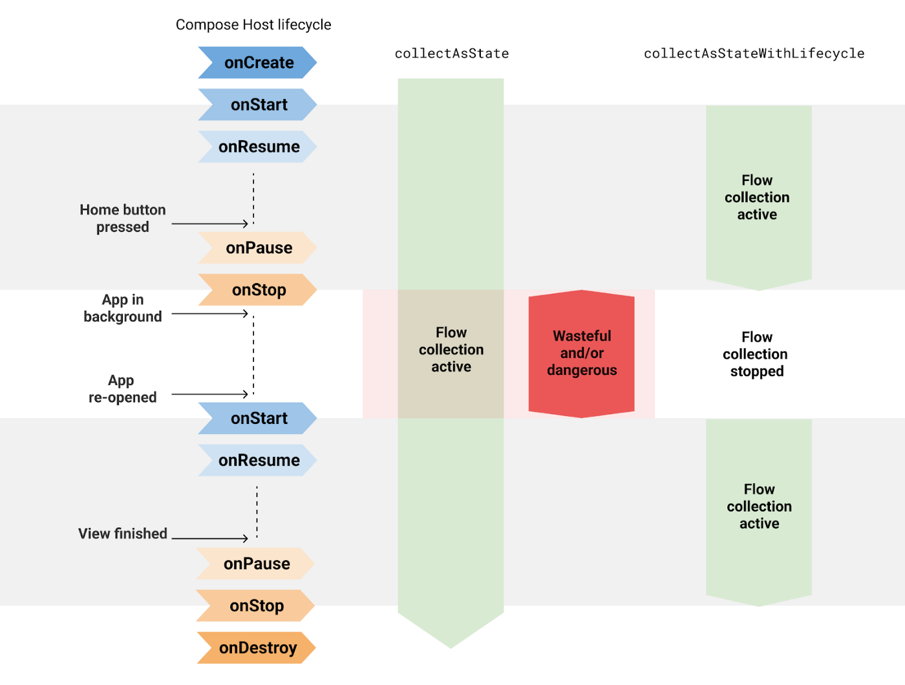
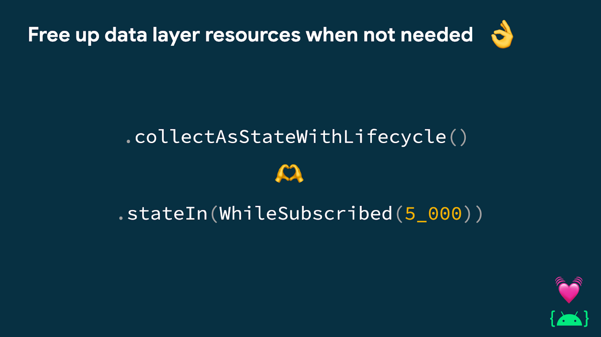
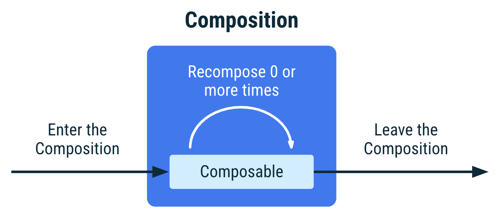

Consuming flows safely in Jetpack Compose
Use the collectAsStateWithLifecycle API to collect flows in a lifecycle-aware manner from your UI.
Collecting flows in a lifecycle-aware manner is the recommended way to collect flows on Android. If you’re building an Android app with Jetpack Compose, use the collectAsStateWithLifecycle API to collect flows in a lifecycle-aware manner from your UI.
collectAsStateWithLifecycle allows your app to save app resources when not needed, such as when the app is in the background. Keeping resources alive unnecessarily can impact the user’s device health. Such resources may include firebase queries, location or network updates, and database connections.
Keep reading to know more about this API, why you should collect in a lifecycle-aware manner, and how it compares to the collectAsState API.
collectAsStateWithLifecycle
collectAsStateWithLifecycle is a composable function that collects values from a flow and represents the latest value as Compose State in a lifecycle-aware manner. Every time a new flow emission occurs, the value of this State object updates. This causes a recomposition of every State.value usage in the Composition.
By default, collectAsStateWithLifecycle uses Lifecycle.State.STARTED to start and stop collecting values from the flow. This occurs when the Lifecycle moves in and out of the target state. This lifecycle state is something you can configure in the minActiveState parameter.
 collectAsStateWithLifecycle cancels the flow collection when the app is in the background by default
The following snippet demonstrates is how to use collectAsStateWithLifecycle to collect a StateFlow’s uiState field that a ViewModel in your composable function has exposed:
/* Copyright 2022 Google LLC.
SPDX-License-Identifier: Apache-2.0 */
@OptIn(ExperimentalLifecycleComposeApi::class)
@Composable
fun AuthorRoute(
onBackClick: () -> Unit,
modifier: Modifier = Modifier,
viewModel: AuthorViewModel = hiltViewModel()
) {
val uiState: AuthorScreenUiState by viewModel.uiState.collectAsStateWithLifecycle()
AuthorScreen(
authorState = uiState.authorState,
newsState = uiState.newsState,
modifier = modifier,
onBackClick = onBackClick,
onFollowClick = viewModel::followAuthorToggle,
)
}
Every time the AuthorViewModel’s uiState emits a new AuthorScreenUiState value, AuthorRoute will be recomposed. For more usages of collectAsStateWithLifecycle, check out the Now in Android app, and its migration PR.
To start using the collectAsStateWithLifecycle API in your project, add the androidx.lifecycle.lifecycle-runtime-compose artifact to your project.
/* Copyright 2022 Google LLC.
SPDX-License-Identifier: Apache-2.0 */
// app/build.gradle file
dependencies {
implementation "androidx.lifecycle:lifecycle-runtime-compose:2.6.0-alpha01"
}
Note: This is a new API that is currently in alpha. Additionally, it requires opting in to the
ExperimentalLifecycleComposeApiannotation.
Under the hood
Under the hood, the implementation of collectAsStateWithLifecycle uses the repeatOnLifecycle API which is the recommended way to collect flows in Android using the View system.
collectAsStateWithLifecycle saves you from typing the boilerplate code shown below that also collects flows in a lifecycle-aware manner from a composable function:
/* Copyright 2022 Google LLC.
SPDX-License-Identifier: Apache-2.0 */
@Composable
fun AuthorRoute(...) {
val lifecycle = LocalLifecycleOwner.current.lifecycle
val uiState by produceState<AuthorScreenUiState>(
initialValue = viewModel.uiState.value
key1 = lifecycle
key2 = viewModel
) {
lifecycle.repeatOnLifecycle(state = STARTED) {
viewModel.uiState.collect { value = it }
}
}
AuthorScreen(...)
}
Flow collection in your architecture
Types in your app architecture shouldn’t know about the implementation details of other types. The UI shouldn’t know how the ViewModel produces the UI state. If the UI is not visible on the screen, the flow collection should stop to free up app resources if appropriate.
The UI can help free up resources by collecting the UI state using collectAsStateWithLifecycle. The ViewModel can do the same by producing the UI state in a collector-aware manner. If there are no collectors , such as when the UI isn’t visible on screen, stop the upstream flows coming from the data layer. You can do so using the .stateIn(WhileSubscribed) flow API when producing the UI state. For more information about this, watch this part of the Kotlin flows in practice talk. For testing the ViewModel producing UI state in this way, check out the testing guide.
 In the UI layer, consume the UI state using collectAsStateWithLifecycle and produce it using .stateIn(WhileSubscribed) when the data layer exposes reactive streams. This enables the rest of the app to free up resources when not needed.
Consumers and producers of flows don’t need to know how each other is implemented. Figuring out implementation details in a big app with multiple environments, variants, libraries, and features can be very time consuming. And even worse, maintaining code that relies on implementation details is hard.
Keeping resources active in the background
Android apps can run on a myriad of Android devices. Unfortunately, not all devices and not all users have endless resources. Apps usually run in a constrained environment. When an Android app is running, there are important factors that impact the user experience and device system health:
-
CPU usage: CPUs have the highest battery consumption of all device components. Battery life is a perennial user concern. If abused, users might uninstall your app.
-
Data usage: Reducing network traffic in an app when not connected to Wi-Fi can help users save money.
-
Memory usage: How an app uses memory can have a very large impact on the overall stability and performance of the device.
An Android developer that wants to respect the user, device system health, or build for billions should optimize these different factors depending on the market, devices, or countries they’re targeting. Keeping unneeded resources alive can have a negative impact depending on the type of device and the Android version the device is running. Using collectAsStateWithLifecycle in the UI layer enables the rest of the hierarchy to free up resources.
collectAsState comparison
Developers often ask: if collectAsStateWithLifecycle is the safest way to collect flows from composable functions in Android, why do we need the collectAsState API now? or why not add the lifecycle-aware functionality to collectAsState instead of creating a new API?
The lifecycle of a composable function is agnostic to the platform Compose is running on. As documented on the Lifecycle of composables page, instances of composable functions enter the Composition, recompose 0 or more times, and leave the Composition.
 Lifecycle of an instance of a composable function in the Composition.
The collectAsState API follows the Composition’s lifecycle. It starts collecting the flow when the composable enters the Composition and stops collecting when it leaves the Composition. collectAsState is the platform-agnostic API you can use to collect flows.
However, when using Compose in an Android app, the Android lifecycle also plays a critical role in how resources should be managed. Even if Compose halts recompositions while the Android app is in the background, collectAsState keeps the collection active. This makes it impossible for the rest of the hierarchy to free up resources.
Both collectAsState and collectAsStateWithLifecycle have a purpose in Compose. The latter when developing Android apps, the former when developing for other platforms.
Migrating from collectAsState to collectAsStateWithLifecycle is a no-brainer:
/* Copyright 2022 Google LLC.
SPDX-License-Identifier: Apache-2.0 */
+ @OptIn(ExperimentalLifecycleComposeApi::class)
@Composable
fun AuthorRoute(
onBackClick: () -> Unit,
modifier: Modifier = Modifier,
viewModel: AuthorViewModel = hiltViewModel()
) {
- val uiState: AuthorScreenUiState by viewModel.uiState.collectAsState()
+ val uiState: AuthorScreenUiState by viewModel.uiState.collectAsStateWithLifecycle()
AuthorScreen(
authorState = uiState.authorState,
newsState = uiState.newsState,
modifier = modifier,
onBackClick = onBackClick,
onFollowClick = viewModel::followAuthorToggle,
)
}
Collecting flows in a lifecycle-aware manner is the recommended way to collect flows on Android to enable other parts of your app to free up resources if needed.
If you’re building an Android app with Jetpack Compose, use the collectAsStateWithLifecycle composable function to do this.
P.S. Thanks to Jose Alcérreca, Marton Braun, Alejandra Stamato, and Jake Roseman for reviewing this article.